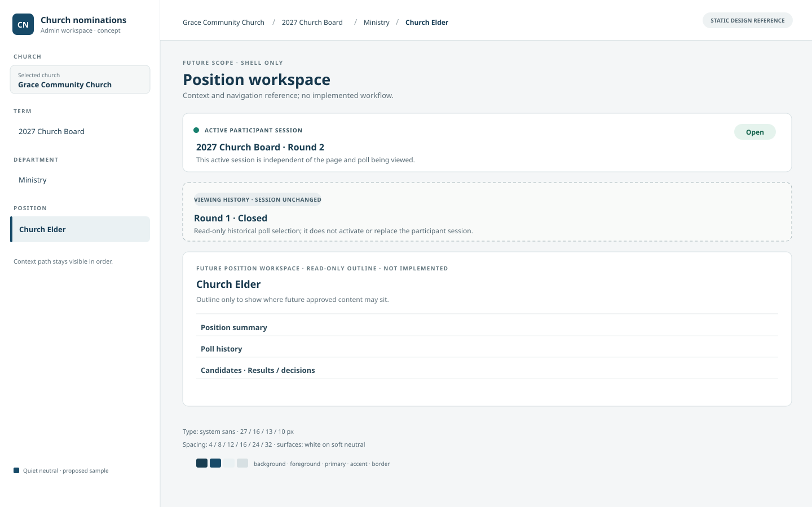
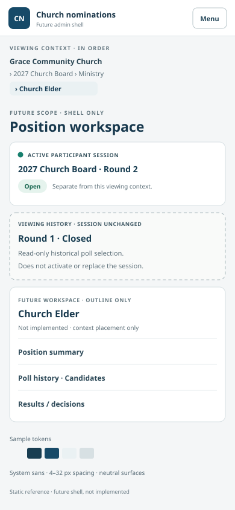
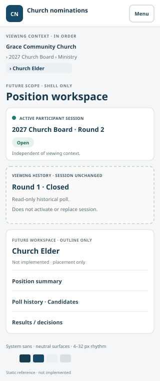
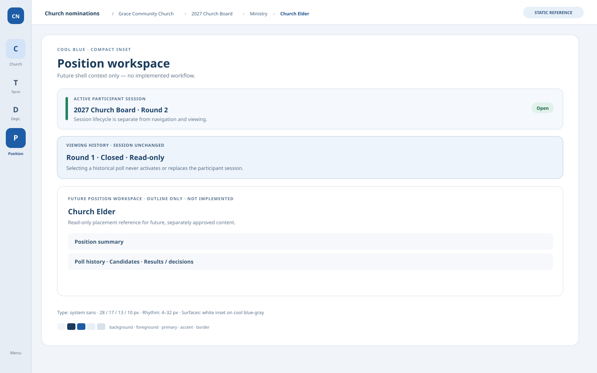
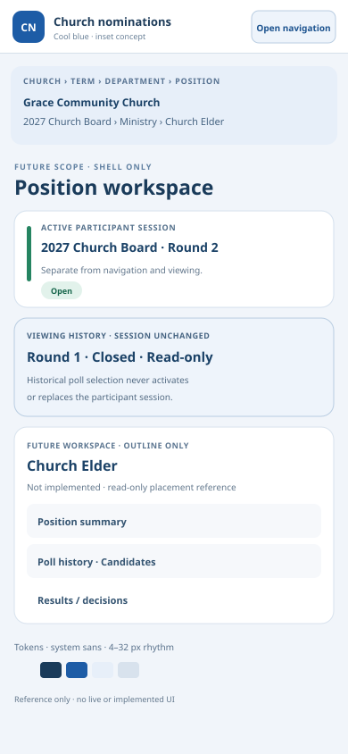
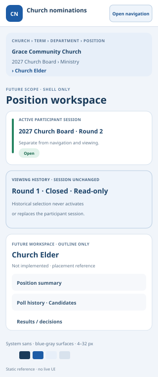
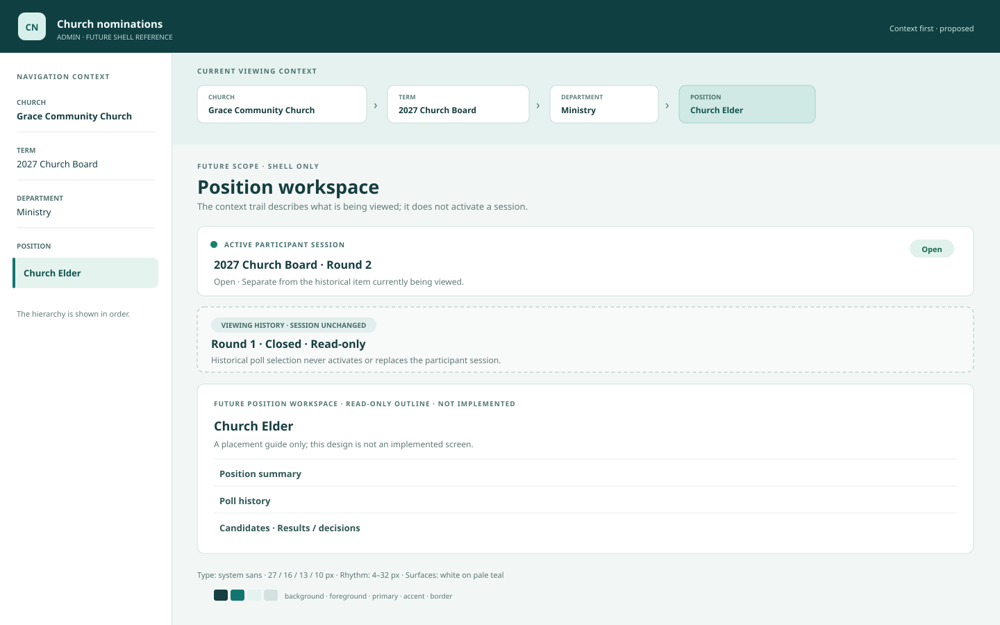
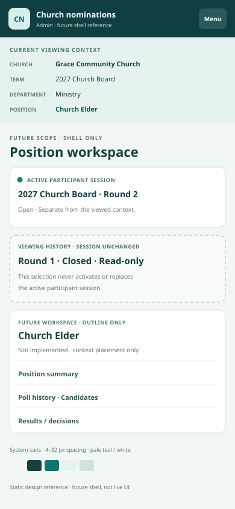
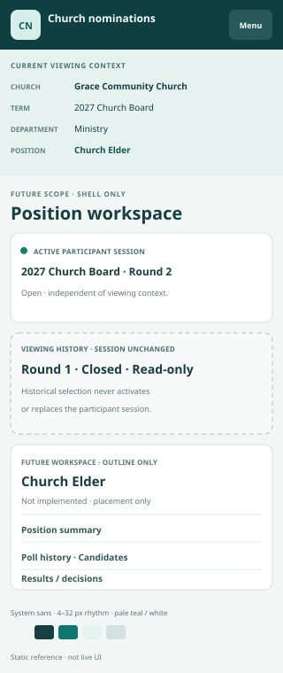

A · Quiet neutral grouped navigation
Always-visible hierarchy, simple grouped sidebar, calm neutral surfaces. Recommended for clarity and low visual noise.





B · Cool blue compact inset
Dense icon rail on desktop with the complete context retained in the breadcrumb; mobile gives the navigation a labeled menu entry point.





C · Teal site header, context first
Persistent brand/header and a prominent four-level context trail make location the first visual cue; stronger color brings more brand presence.





Policy invariant in every direction: navigating church/term/department/position or viewing a historical poll changes only viewing context. It never activates, replaces, or clears the participant session. The “active session” and “historical view” shown here are deliberately different records.